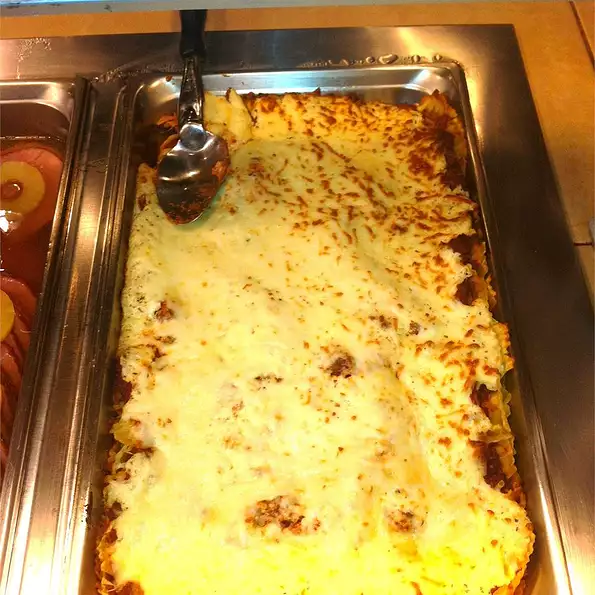

Easy lasagna III

Description
This recipe is all about an easy to make and extremley delicious
lasagna. The prep time for this will be 30 minutes.
The cooking time will be 30 minutes. This means it will take an hour to complete this dish.
It serves seven people.
Ingredients
- 10 ounches lasagna noodles
- 1 and a half pounds lean ground beef
- 3 cups cottage cheese
- 2 eggs
- 1 teaspoon garlic powder
- 2 table spoon dried parsley
- salt and pepper to taste
- 6 ounce tomato paste
- 6.5 ounce tomato sauce
Steps
- Preheat the oven to 190 degree Celsius
- Bring a large pot of lightly salted water to a boil.
Add lasagna noodles and cook for 8 to 10 minutes
or until al dente; drain.
- In a skillet, brown ground beef. Using a fork, mix cottage cheese, eggs, garlic powder,
parsley, salt and pepper. In a separate bowl combine tomato paste and tomato sauce.
- In a 9x13 inch baking pan, layer noodles, ground beef, tomato sauce mixture and cottage cheese mixture.
Two layers of each will fit. Cover with tin foil and bake for 30 minutes.
Remove tin foil the last 8 minutes of baking time.